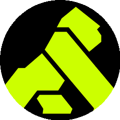

CODE · GRAPH · MEMORY
它把整个代码库
记进了一张图谱
记进了一张图谱
一行代码也不漏，亚毫秒就能查回来
| 00| 25| 50| 75| 99
#01
CODE INTELLIGENCE
涨星居首 · AI 编程省 token
DeusData /
codebase-memory-mcp
codebase-memory-mcp

把代码库索引成知识图谱 · 亚毫秒查询 · 158 种语言
不反复喂代码
单二进制零依赖
C 语言实现
开发者用脚投票，单日涨星登顶
两个工具，主打数据不出本地
#02 · +247 ★
Universal-Debloater
不 root 就能清理安卓预装，隐私和续航一起管
7.9K ★ · 跨平台
#03 · 新上榜
LibreTranslate
自托管离线翻译，企业做翻译不用把文本传出去
15.0K ★ · Python
本地化是这期的暗线
翻译不联网，清预装不 root
隐私 + 续航
Universal-Debloater
ADB 一键去臃肿，普通人也能做专业级清理
A 档 · 普通人可用
文本不外传
LibreTranslate
Docker 一键部署，企业隐私敏感场景刚需
A 档 · 普通人可用
专业级能力，平民化使用
100m80m60m40m20m
#04
API CLIENT
新上榜 · 免费替代付费工具
Kong /
insomnia
insomnia

开源跨平台 API 客户端 · 调接口测 GraphQL 连 WebSocket
开源跨平台
TypeScript
本地/云端/Git 存储
开源免费做到付费工具的核心能力
两个偏研究的，AI 往工程化和预测两头扎
#05 · 新开源
zai-org / GLM-5
从随手写代码，到 AI 自己干完整个工程
Vibe Coding 随手写
Agentic Engineering 智能体工程
#06 · +858 ★
google-research / timesfm
时间序列基础模型，预测未来数据
预测对象销量 · 流量 · 负荷
思路大模型预测未来
用大模型思路，预测未来数据
国产开源大模型
GLM-5
主打从氛围编程到智能体工程的全链路跃迁
B 档 · 需部署推理
Google Research 出品
timesfm
拿大模型思路，预测销量、流量、负荷这类未来数据
B 档 · 科研向
这 6 个里
你最想用哪个？
你最想用哪个？
关注 ★ GitHub 星探
每日热门
深度解析
下期见